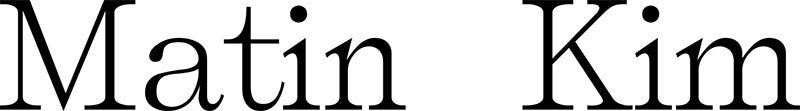

대표 로고대표 브랜드 마크
대표 로고대표 브랜드 마크홈 > 브랜드 매거진 > 마리떼 프랑소와 저버
마리떼 프랑소와 저버
마리떼 프랑소와 저버(Marithé François Girbaud)는 프랑스 데님 브랜드를 한국 레이어가 라이선스로 리부트해 전개한 패션 브랜드이다.
산업 분야 패션·럭셔리 · 공개 등급 디렉토리 · 브랜드 평가 3.6 ★
한눈에 보는 브랜드
마리떼 프랑소와 저버(Marithé François Girbaud)는 1990년대 인기를 끈 파리 기반 데님 브랜드로, 한국에서는 레이어가 2018년 라이선스를 확보해 2019년부터 옛 디자인 복각으로 시작해 여성복 중심으로 리브랜딩하며 성장했다.
브랜드 관점
제품·서비스 범위, 유통 방식, 시각 아이덴티티, 시장 포지션을 함께 비교하면 같은 산업의 다른 브랜드와 차이가 선명해집니다.
시작과 성장
마리떼 프랑소와 저버는 1972년 프랑스에서 마리테 바셰리와 프랑수아 저버 부부가 설립한 데님 브랜드다. 두 사람은 1960년대 후반 생트로페에서 만나 청바지를 미리 세탁해 부드럽게 만드는 실험을 시작했고, 1970년대 중반에는 경석을 세탁기에 넣어 인위적으로 낡은 질감을 내는 스톤워싱 기법을 산업화하며 이름을 알렸다.
배기 팬츠와 몸에 붙는 진을 앞세워 1980년대와 1990년대 대중문화에서 큰 영향력을 발휘했으나, 본사는 2012년 파산하며 한동안 활동이 끊겼다. 이후 2019년 한국 패션기업 레이어가 국내 라이선스를 확보해 브랜드를 되살렸고, 기존 데님 중심에서 스트리트 캐주얼로 방향을 바꿔 상품 기획과 디자인을 직접 맡아 재전개했다.
1990년대 로고를 그대로 살려 의류 전면에 크게 적용한 로고 티셔츠가 큰 인기를 끌며 한국 시장에서 빠르게 성장했고, 레이어는 이후 아시아 지역으로 라이선스 범위를 넓혔다.
브랜드 아이덴티티
레트로 데님 헤리티지를 한국형 컨템포러리로 재해석한 리부트 브랜드다.
제품과 서비스
대표 제품과 서비스 정보는 편집 검수 후 공개됩니다.
현재 상태
산업: 패션·럭셔리
타임라인
정리된 연도형 이벤트가 없습니다.
BI/CI 변천사
대표 로고대표 브랜드 마크함께 읽을 브랜드
 패션·럭셔리 · 편집 검수구찌
패션·럭셔리 · 편집 검수구찌 패션·럭셔리 · 편집 검수디젤
패션·럭셔리 · 편집 검수디젤디젤(Diesel)은 1978년 렌조 로소가 이탈리아 브레간체에서 설립한 데님 중심의 컨템포러리 패션 브랜드다. 도발적이고 실험적인 디자인으로 데님 헤리티지를 재해석...
 패션·럭셔리 · 편집 검수캠퍼
패션·럭셔리 · 편집 검수캠퍼캠퍼(Camper)는 1975년 로렌소 플룩사가 스페인 마요르카에서 설립한 신발 브랜드다. 마요르카의 전통 제화 공예를 바탕으로 편안함과 개성 있는 디자인을 결합한...
 패션·럭셔리 · 디렉토리디스이즈네버댓
패션·럭셔리 · 디렉토리디스이즈네버댓
떠그
떠그클럽
패션·럭셔리 · 디렉토리떠그클럽
렉토
렉토
패션·럭셔리 · 디렉토리렉토
패션·럭셔리 · 디렉토리마뗑킴 패션·럭셔리 · 디렉토리마르디 메크르디
패션·럭셔리 · 디렉토리마르디 메크르디